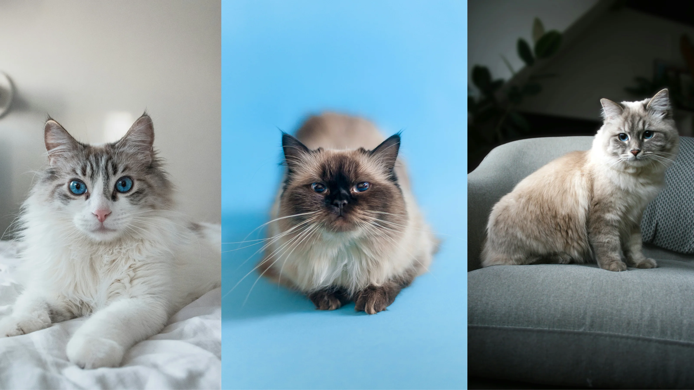

Этот пост создан в развлекательных целях и не несет никакой информационной пользы.
Автор не несет никакой ответственности за всю ниже сказаную информацию!
Замурчательного читания!>
И так, приступим.Сегодня мы расссмотрим 5 самых популярных пород котов, их характеристики и заводские настройки.
Мейн-кун считается одной из старейших местных пород Северной Америки. Существует множество противоречивых историй происхождения этой породы. Наиболее вероятно, что мейн-куны произошли в результате скрещивания американских короткошерстных и длинношерстных кошек, завезенных в Америку викингами. Веб-сайт компании по страхованию животных Рetcover пишет, что в 1976 году порода была окончательно признана чемпионом Ассоциации любителей кошек.
Сколько весит мейн-кун? Вес взрослого самца мейн-куна может достигать 10 кг, самки весят не более 7–8 кг. В длину они вырастают до 1 м. Таких размеров кошки достигают в 3–5 лет. Эксперт Лариса Чарч пишет, что мейн-кун — одна из самых крупных домашних кошек. Некоторых из них даже принимают за рысь.
Внешние признаки этой породы:
тело сильное, тяжелое и мускулистое;
крупные лапы;
хвост толстый и пушистый;
кисточки на больших ушах;
глаза круглые и раскосые;
голова с квадратной мордой, массивными челюстями, высокими скулами, плоским черепом с легким переходом от лба к переносице;
длинная блестящая шерсть представлена в 75 различных окрасах и узорах. Мейн-куны не умеют мяукать, но зато считаются самыми разговорчивыми котами. Они издают мягкие вибрирующие звуки, и не существует котов с одинаковыми голосами.
Бенгальская
Название породы Felis Bengalensis переводится с латыни как ‘азиатская леопардовая кошка’. Породу часто называют «репликой хищников» за необычный леопардовый рисунок на шерсти.
Откуда родом бенгальский кот? Бенгальская порода кошек была выведена в США в 1960-х годах. Селекционер Джейн Милл привезла из Таиланда бенгальскую кошку по имени Малайзия. Кошка повязалась с домашним черным котом, и на свет появился пятнистый котенок Кин-Кин. Селекционер планировала вывести красивую кошку с покладистым характером и продолжала свой эксперимент до получения устойчивых признаков породы. Официально бенгальская порода кошек была зарегистрирована в 1991 году.
Как выглядит бенгальская кошка? Бенгальская кошка — довольно крупное животное. Вес взрослого кота достигает 5–7 кг, кошки — 3,5–4,5 кг.
Внешние признаки этой породы
крупное тело с длинным мускулистым туловищем и крепкими лапами. Соавторы книги «Кошки. Самая полная иллюстрированная энциклопедия» Светлана Дудникова, Ольга Есауленко уточняют, что мускулатура кошки состоит из 500 мышц, что делает ее подвижной и легкой в прыжке;
длинный толстый хвост;
Небольшие уши;
глаза миндалевидной формы с черной окантовкой;
блестящая короткая шерсть с леопардовым рисунком и мраморными разводами.
Ключевая информация об уходе за бенгальской кошкой
Условия содержания
Гигиена
Питание
Здоровья
- просторное пространство, нужно избегать хрупких предметов;
- кошачий домик с когтеточкой и лесенкой;
- изолировать от мелких домашних животных;
- дрессировка и приучение к лотку;
- прогулки на поводке, нельзя оставлять в одиночестве.
- вычесывание короткой шерсти каждые две недели, использование специальной перчатки в период линьки;
- купание раз в месяц или по мере загрязнения.
- сбалансированный корм, сухой или натуральный;
- нельзя перекармливать, нужно обеспечить чистой питьевой водой, предпочтение стекающей воде для питья.
- ежегодные ветеринарные осмотры, соблюдение графика вакцинации;
- профилактика заболеваний, борьба с гельминтами и эктопаразитами.
Кот смотрящий в зеркало
Кот хочет съесть вилку
Чтобы бенгальский кот развивался, рос здоровым и долго жил, соблюдайте правила ухода:
Уход за шерстью. Короткая шерсть бенгала не требует груминга. Достаточно 1 раз в две недели вычесывать кота расческой или щеткой. Во время линьки пользуйтесь специальной резиновой перчаткой, чтобы быстро снять отмершие волоски, как советует Росвита Бергер в книге «Бенгальская кошка. Воспитание, питание, обучение, характер и многое другое о породе бенгал».
Купание. Бенгальские коты любят купание, но часто их купать не стоит. Это приведет к сухости и ломкости шерсти. Достаточно устроить коту ванную 1 раз в 2–3 недели.
Кормление. Питание кошки должно быть сбалансированным. Пользуйтесь сухим или натуральным кормом, но старайтесь не перекармливать животное. Обязательно ставьте чистую питьевую воду в миске или специальный фонтанчик. Если фонтанчика нет, пускайте кота в ванную и включайте кран. Бенгалы очень любят пить стекающую воду, играя со струей.
Здоровье. Проводите ежегодные профилактические осмотры животного у ветеринара. Придерживайтесь графика вакцинации. Не забывайте о профилактической борьбе с гельминтами и эктопаразитами.
Британская короткошёрстная
Британские короткошерстные кошки — потомки египетских и итальянских пород. Густая шерсть с подпушком у этих котов появилась под воздействием прохладного климата Англии, как пишет Росвита Бергер в книге «Британская короткошерстная кошка». Впервые чистопородную британскую кошку представили на выставке в 1889 году.
В чем разница между шотландским и британским котом? Сразу отличить шотландского кота от британского можно только в том случае, если он скоттиш-фолд. Когда у шотландца прямостоячие уши (скоттиш-страйт), отличить его от британца сложно.
Основные отличия могут быть такие:
Тело. Британский кот имеет более мощное туловище с короткой шеей, толстыми лапами и хвостом средней длины с закругленным концом. Шотландская порода выглядит стройнее, имеет более тонкий длинный хвост.
Голова. У шотландцев голова шаровидная с небольшими щеками, ушки посажены ближе к макушке. У британцев голова расширена книзу. Уши у них более крупные и посажены шире.
Характер. Коты британской породы предпочитают больше времени проводить в одиночестве, а шотландцы компанейские, любят общаться и везде сопровождают хозяина.
Автор книги «Британские короткошерстные кошки» Олеся Пухова пишет, что британцы медленно растут до 4 лет, а полного расцвета достигают в возрасте 5 лет. В зрелости британский короткошерстный кот весит 7–8 кг, кошки — 4–6 кг.
Какой характер у британского котенка? У британского котенка покладистый и дружелюбный характер. Его ценят за спокойствие, уравновешенность и благородное отношение к другим питомцам. Представители этой породы очень независимые. Они не терпят излишней мимишности, сторонятся тех, кто хочет их потискать и взять на руки.
Кому подходят британские кошки? Британцы станут идеальными спутниками деловых людей. Они легко переносят одиночество и спокойно ждут, когда хозяин вернется домой. Поскольку коты этой породы умные и неагрессивные, их могут заводить семьи с детьми.
Сколько стоит британская кошка? Джон Картер в Bubbly Рet информирует, что цена на британскую короткошерстную кошку обычно колеблется от $1500 до $2400. Кошки для выставок имеют ценовой диапазон от $2200 до $3000. Стоимость животных британской породы без родословной стартует от $250.
Большая эффектная кошка с выразительными синими глазами и необычным окрасом по характеру напоминает собаку. Она ласковая и преданная. Главное качество рэгдолла — желание быть с человеком. Без общения питомцы тоскуют и болеют. Они готовы по пятам следовать за хозяином по дому и с удовольствием отправятся на прогулку на поводке. При этом рэгдоллы деликатны и ненавязчивы, если видят, что человеку не до них. Рассказываем об особенностях породы, ее характере и условиях содержания.
Описание породы
Рэгдолл — красивая длинношерстная порода. Это крепкое и сильное животное с эффектной внешностью. Общее впечатление — большая «игрушечная» кошка с пронзительными голубыми глазами (3). Тело прямоугольное. Задняя часть тяжелее передней. Грудь широкая, шея короткая. Допустим курдючок. Задние ноги выше передних, что придает линии спины небольшой наклон вперед. Лапы круглые, с пучками шерсти между пальцев. Хвост длинный, достает до плеча, широкий у основания и сужающийся к концу, пушистый по всей длине.
Размер и вес
Рэгдолл — крупная порода. Кошки заметно мельче котов. Вес девочек — 5—6 кг, а мальчиков — 6—10 кг. Длина тела вместе с хвостом достигает метра.
Голова и уши
Голова средняя, широкая. Мордочка округлая, с хорошо развитыми щеками. Подбородок сильный. Важный породный признак: верхняя часть головы между ушами имеет четко выраженную плоскую поверхность (2). Лоб закругленный. Нос прямой. Уши средние, широкие в основании, со слегка закругленными кончиками, немного наклонены вперед. Большие и овальные глаза синего или голубого цвета, чем интенсивнее, тем лучше.
Окрас
Рэгдолл может быть любого пойнтового окраса, с сиамскими отметинами и вкраплениями белого цвета. Различают три вида:
Колорпойнт. Тело светлое. Уши, лапы и хвост окрашены. На мордочке — маска.
Биколор. Живот, грудь и воротник белые. Голова, спина и хвост окрашены. На голове белое пятно в виде перевернутой буквы V, окружающей розовый нос. Лапы желательно белые.
Миттед. На мордочке маска. От подбородка до основания хвоста идет белая полоса. Передние лапки в белых носочках. Голова, спина и ноги до середины бедра окрашены.

Какой милашшшшшшшш
Сибирская
Происхождение сибирских котов
Корни сибиряков уходят вглубь веков. Считается, что их предки - дикие лесные и степные коты, обитавшие на территории Сибири и Урала. Суровый климат, постоянная необходимость добывать пищу и защищаться от хищников сформировали их главные черты: мощное телосложение, густую водоотталкивающую шерсть и непревзойденные охотничьи навыки. Первые упоминания о крупных, пушистых "бухарских" кошках, которых привозили из Азии купцы, встречаются в российских источниках еще несколько столетий назад. Они естественным образом смешивались с местными кошками, создавая уникальный генофонд.
Характер и темперамент
«За годы практики я заметила, что сибирская кошка - это идеальный баланс независимости и привязанности. Она не будет навязчиво требовать внимания, но всегда будет рядом, наблюдая за вами с царственным спокойствием. Это интеллектуалы кошачьего мира, которые ценят уважение и отвечают на него глубокой преданностью. Они не терпят фамильярности, но для "своего" человека готовы стать тенью и верным компаньоном», - ветеринарный врач Екатерина Сербина.
Уникальные особенности породы
Гипоаллергенность: миф или реальность?
Это один из самых частых вопросов, которые мне задают. Правда в том, что абсолютно гипоаллергенных кошек не существует. Аллергию вызывает в основном белок Fel d 1, который содержится в слюне и кожных выделениях. Исследования и практика показывают, что у многих сибирских кошек уровень выработки этого белка значительно ниже, чем у других пород. Это означает, что для людей с несильной аллергией сибирская кошка может стать подходящим питомцем. Но перед покупкой котенка я настоятельно рекомендую провести время в питомнике, чтобы проверить индивидуальную реакцию организма.
Охотничьи инстинкты
Сибиряки - прирожденные охотники. Даже живя в квартире, они будут демонстрировать свои таланты, "охотясь" за игрушками, солнечными зайчиками или мухами. Этот инстинкт делает их отличными мышеловами в загородных домах.
Сезонная линька
Дважды в год сибиряки устраивают "большую смену гардероба". Весной они сбрасывают густой зимний подшерсток, и количество шерсти в доме резко увеличивается. Осенью происходит обратный процесс. В эти периоды уход за шерстью требует особого внимания.
Плюсы и минусы сибирской породы
Плюсы
Минусы
✅ Крепкое здоровье и выносливость
❌ Обильная сезонная линька
✅ Уравновешенный и ненавязчивый характер
❌ Требует пространства и активности
✅ Высокий интеллект и обучаемость
❌ Может быть независимым и своенравным
✅ Преданность семье и терпеливость к детям
❌ Сильный охотничий инстинкт (опасно для мелких питомцев)
✅ Сравнительно низкая аллергенность для некоторых людей